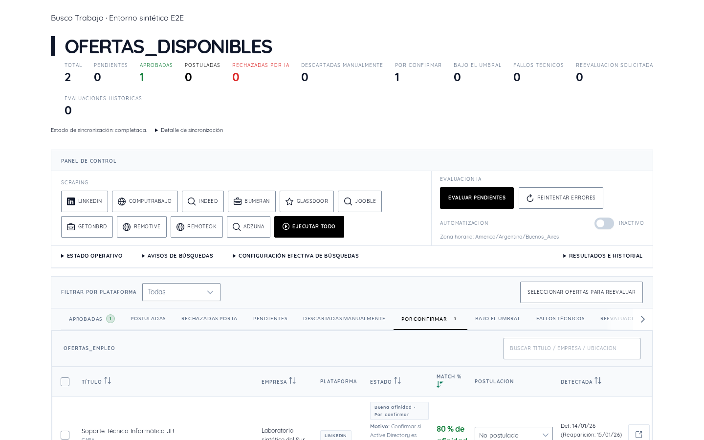
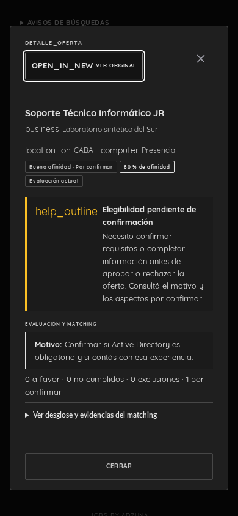

Preliminar · no implica aprobación de Codex ni permiso de merge
#105 · Afinidad, elegibilidad y fallos
Una evaluación puede indicar 80 % de afinidad sin aprobar la oferta. Si falta confirmar un requisito, muestro qué falta y conservo ese resultado aunque una reevaluación posterior falle.
Rama: feature/105-calibracion-visibilidad. Base: 1af89ac9f5a7e91929fa0517db4786dab27e17db. Candidato de código: 2b4e855. Issue y matriz de casos.
Antes y después
Antes · código base
La tabla ocultaba la afinidad de cualquier oferta persistida como pendiente. El backend preservaba decisiones aprobadas o rechazadas, pero podía reemplazar un resultado válido por confirmar.
Después · soporte IT JR ficticio
Buena afinidad · Por confirmar
80 % de afinidad
Motivo: Confirmar si Active Directory es obligatorio y si contás con esa experiencia.
Las imágenes son capturas del dashboard Angular y del detalle en Chrome, con datos sintéticos. No hay captura anterior ni acceso a una oferta real.




Qué cambié y por qué
- Separé decisión, intento y vigencia.
situacion-evaluacion.jsproyecta la información persistida en dos campos nuevos de la API, sin agregar estados ni columnas. La vigencia sigue comparando firmas; no reconstruye evidencia faltante. - No convierto ausencia de información en incompatibilidad.
servicio-evaluacion.jscontrasta el requisito con el aviso y el perfil. Lo deseable no bloquea; la ausencia solo puede sustentar un veto si la obligación y la ausencia están acreditadas. El umbral no cambia: 59 % queda debajo y 60 % alcanza si no hay otro impedimento. - No reemplazo una evaluación con un fallo. Si ya hay un resultado laboral válido, el intento fallido actualiza el diagnóstico con el control de concurrencia existente. Afinidad, fecha, firma y seguimiento quedan intactos. El polling lee el progreso; no solicita otra evaluación.
- Presento la misma situación en todas las vistas.
presentacion-evaluacion.tsda a tabla y detalle etiquetas comunes. El dashboard agrupa por oferta y respeta el seguimiento manual.
Oferta y perfil → requisitos y afinidad → resultado laboral válido
↘ fallo técnico → diagnóstico del intento
Resultado válido + diagnóstico + vigencia → tabla, tarjeta, detalle y filtros
Por ejemplo, una misma respuesta puede contener situacion_evaluacion: 'por_confirmar' y ultimo_intento_evaluacion: 'fallo_tecnico'. Clasificarla solo por estado_evaluacion borraría esa diferencia.
Correcciones tras la auditoría de la PR #108
- Sin descripción (F1): si no hay un veto determinístico acreditado, no se crea una evaluación válida. Queda
sin_evaluar, sin afinidad ni firma nuevas. Procesar esa oferta no suma una evaluación válida ni un fallo técnico. - Pasada ordinaria (F2): conserva un «Por confirmar» si no cambian los criterios ni la entrada efectiva, aun sin caché. Una selección expresa, un marcador o un cambio real sí permiten evaluarla. Sin huella histórica, no se inventa una: se usa la firma y las invalidaciones registradas.
- Requisito ambiguo (F5): si una cita del aviso relaciona Kubernetes con el puesto sin aclarar su obligatoriedad, 80 % no implica aprobación. También comprobé una tecnología mencionada en «Stack del equipo» y la segunda de una lista de herramientas. Lo deseable no bloquea y un veto acreditado sigue prevaleciendo.
- Resumen del lote (F4): una oferta puede seguir pendiente en un lote completado. Eso no convierte el cierre en cancelación ni reemplaza la decisión laboral anterior.
Correcciones: backend fbc8782 y 2b4e855; frontend 8dacea0. La suite estándar de Jest dio 4.054 aprobadas y 166 omitidas; Karma, 608 aprobadas y 4 omitidas; Playwright, 88 aprobadas. Las tres ejecuciones salieron con código 0 y sin fallas. La verificación independiente focal del último SHA pasó 22/22, incluido el uso de caché. No se hizo SQL, inferencia ni login real.
Pruebas y calibración de la entrega inicial
| Comprobación | Resultado y límite |
|---|---|
| Jest backend · suite estándar | Salida 0: 4.029 aprobadas, 0 fallidas, 166 omitidas. Node 24.18.0, red aislada y sin dotenv; cuatro suites de integración excluidas por el script estándar. Después fijé el 95 % exacto en el fixture de la regresión del veto: 8/8 en la suite focal, sin cambiar código de producción. |
| Karma · Chrome Headless 158 | Salida 0: 605 aprobadas, 0 fallidas, 4 omitidas. Entorno sintético aislado. |
| Playwright · caso de 80 % | Salida 0: 4 aprobadas. Incluidas en las 86 pruebas aprobadas de la regresión ampliada (salida 0, sin fallas). Dos tamaños y dos temas; foco por teclado y sin escrituras en el recorrido del 80 %. |
| Base de datos e integraciones reales | No ejecutadas. No se usaron PostgreSQL, Firebase ni proveedores reales, y no se consumió cuota. |
Comandos y logs locales
El runner creó copias fuera del repositorio, ocultó los dotenv y las configuraciones reales, usó solo loopback y montó dependencias de solo lectura. Para Angular copió la plantilla de entorno; el identificador Git de Jest se generó en la copia, solo para el smoke del runner SQL59. Los flags de las suites no reemplazan ese aislamiento.
R=/tmp/gpMcA4T4/busca-105.UAck1Jxo/aislado PRUEBAS_GIT_SINTETICO=1 bash "$R" backend npm test -- --runInBand --silent --verbose=false bash "$R" frontend npm test -- --watch=false --browsers=ChromeHeadless bash "$R" frontend ./node_modules/.bin/playwright test tabla-ui.spec.ts detalle-ui.spec.ts detalle-harness.spec.ts dashboard.spec.ts calibracion-105.spec.ts
Logs locales de las suites: job-14.log y job-15.log en /tmp/gpMcA4T4/gentle-jobs-4IzL3L/. Son artefactos de esta ejecución, no resultados de CI.
El comparador offline usa 30 casos ficticios con etiquetas propuestas. Cambia esfuerzo o prompt por separado y distingue las discrepancias laborales de los fallos de ejecución. Las tasas de la simulación no son mediciones de un modelo.
Auditoría, límites y próximos pasos
Dictamen técnico: la primera revisión independiente encontró defectos de evidencia y legados. Se corrigieron los seis casos iniciales y los legados. Una segunda revisión detectó una regresión adicional en un veto obligatorio; la prueba automática reproduce y verifica su corrección. El verificador volvió a ejecutar la suite focal sobre el árbol de backend de bab0da3: 8/8, incluido veto al 95 % y caché, sin cambios de backend en ac60fb3. Las pruebas locales no detectan un defecto material pendiente; no acreditan la verificación integral con PostgreSQL aislado ni la sesión real. Codex: no ejecutado; no hay un Codex local disponible por CLI ni se inició un ciclo remoto. Los subagentes de Pi que trabajaron como explorador, implementadores y verificador no cuentan como Codex. No se acreditó un nivel de esfuerzo individual.
Publicación: la PR #108 está en Draft y apunta a integracion/openai-calibracion. El titular autorizó el preview de Vercel. Railway enlaza producción a master. No hay autorización de merge ni despliegue a producción.
Para estudiar: distinguir resultado laboral de fallo de ejecución, contratos aditivos, escritura condicional frente a modificaciones concurrentes, e idempotencia de lotes. Las pruebas de regresión verifican efectos observables sin usar datos privados.
Próximo paso: registrar la evidencia de corrección en la PR #108 para la auditoría principal. No solicitar Codex antes de su aprobación y de los gates aplicables. #104 conserva el piloto y la validación real de capacidades; #106 se ocupa de CI, de validar el SHA integrado y de una eventual salida controlada. #91 no se modifica.
Diagnóstico opcional para el titular · SQL no ejecutado
Si decidís inspeccionar producción, usá exclusivamente un rol lector ya habilitado, en una transacción de solo lectura. No devuelvo motivos, desglose, descripciones, datos de perfil ni mensajes crudos. La muestra queda limitada a 20 ofertas; no calcula la categoría de negocio.
BEGIN READ ONLY;
SET LOCAL statement_timeout = '3s';
SET LOCAL lock_timeout = '500ms';
SELECT estado_evaluacion, count(*) AS ofertas
FROM public.ofertas
WHERE fecha_extraccion >= current_timestamp - interval '30 days'
GROUP BY estado_evaluacion
ORDER BY estado_evaluacion;
SELECT id, estado_evaluacion, porcentaje_match, fecha_evaluacion,
firma_criterios_evaluacion IS NOT NULL AS tiene_firma,
explicacion_evaluacion IS NOT NULL AS tiene_explicacion,
CASE WHEN evaluacion_error_mensaje = 'REEVALUACION_SOLICITADA' THEN 'solicitada'
WHEN NULLIF(btrim(evaluacion_error_mensaje), '') IS NOT NULL THEN 'diagnostico'
END AS tipo_marcador
FROM public.ofertas
WHERE fecha_extraccion >= current_timestamp - interval '30 days'
ORDER BY fecha_evaluacion DESC NULLS LAST, id DESC
LIMIT 20;
ROLLBACK;